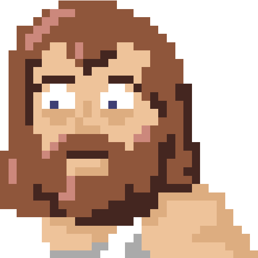
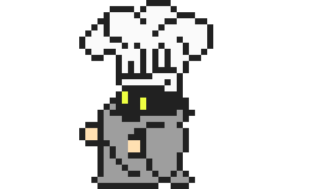
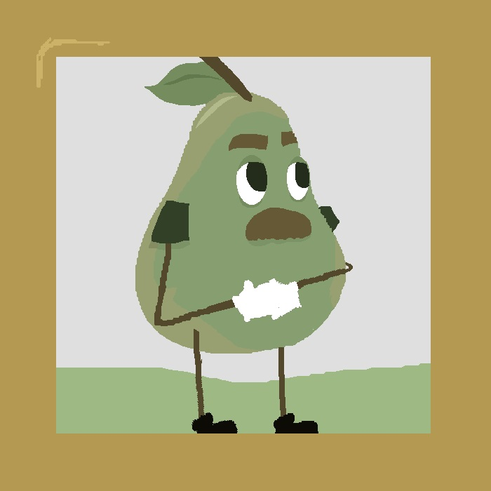
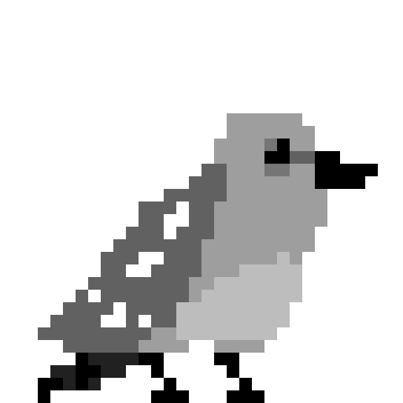
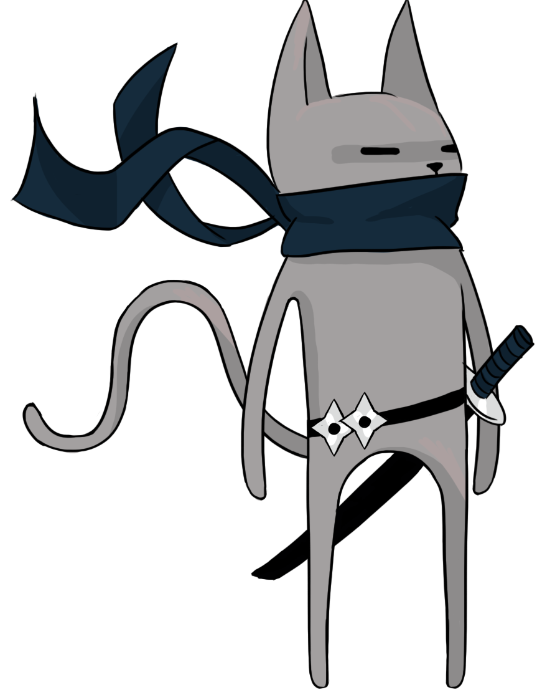
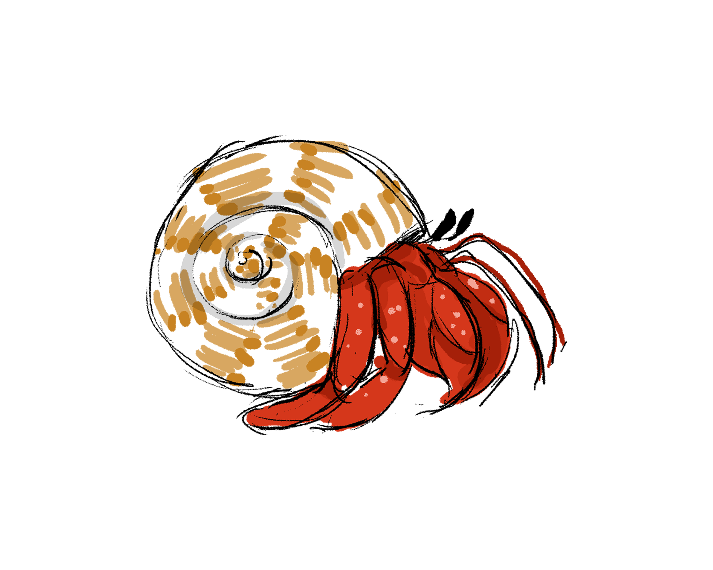
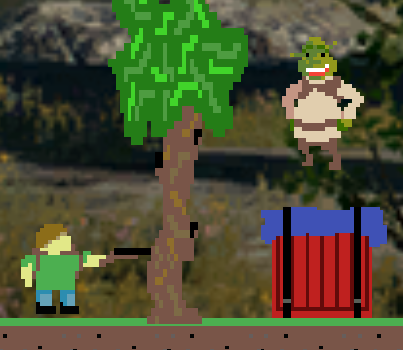

The greatest about section in this entire stack of resumes
- Name: Samuel Scherer
- Hometown: West Chester, Ohio
- Favorite Food: Angel Hair Spaghetti
Hello! I'm a Computer Science student persuing a bachelor's degree at the University of Cincinnati. I'm a motivated software developer with a hobby of making video games. Some of my other hobbies include playing board games, and playing music. I've taught myself to play piano and guitar, with guitar being my new 2020-21 socially distant hobby!
I'm hoping my Computer Science education will allow me to find a job in the Software Development industry. I'm very passionate about the projects I work on, and my only desire from a company is that my colleageus will share that passion!
If you'd like to see my latest resume, you can click the 'Resume' button below for a PDF, or visit my LinkedIn. For information about my Computer Science and Co-op experience, check out the Timeline section of this site. If you want to demo some of my projects, check out the Portfolio section of this site or my Itch.io page! If you'd like to see some of my code, check out my Github profile!
My Skills
C++
C# / Unity
Java
Python
Google Cloud Platform
MatLab
Microsoft Office + Excel
Gitlab CI
Linux
Typescript
Markdown
My Career Timeline
-
Co-op Semester 4: Northrop Grumman
Software Developer Co-op Fall 2020While working at Northrop Grumman, I created and maintained an Android testing pipeline using Docker and Gitlab CI in. a Linux environment. I also created a debugger in Python which reads Logcat output to detect system changes. I maintained a wiki for the above projects using Markdown.
A stand-out hard skill I learned this semester is how to use Continuous Integration software. I was the only person in my team that worked on our CI scripts, and was also the person who created and documented how to set up Gitlab CI runners to use for testing. A soft skill I worked on this semester was my ability to lead when needed. I worked on a small team of co-op students this semester, and I stood out as the member who had a hand in each of our team's tasks. As such, I gave my team's status updates to our project manager at scrum meetings and maintained an issue list for myself and my colleagues.
-
Co-op Semester 3: Siemens Digital Industries Software
Software Developer Co-op Spring 2020At my second co-op semester at Siemens, I rejoined the Classification AI Scrum team. This semester, I was responsible for upgrading the Classification AI software to support the Classification team's Next-Generation Classification data structures, and for updating the software's deployment scripts in Siemens' Teamcenter Environment Manager and Deployment Center applications. I also created a lot of end user and internal developer documentation this semester.
Most of the hard skills I learned on my previous co-op were improved this semseter, especially my C++ coding skills. A soft skill I improved this semester was my collaboration skills - I wasn't very familiar with TEM and Deployment Center, so I spent a lot of time communicating with colleagues, many of whom were working from other time zones! Also, Covid-19 quarantine began halfway through this semester, which called for further improvement of my communication skills.
-
Co-op Semester 2: Siemens Digital Industries Software
Software Developer Co-op Fall 2019At my first co-op semester at Siemens, I was placed on a scrum team which released and maintained the Teamcenter Classification AI software. I maintained several and created several files, adding features as needed or instructed. Some of the files I maintained include Teamcenter Server code, and Classification AI Microservice code. I also created a batch script from scratch which allowed users to easily train AI models using one console command instead of running several scripts.
I learned many hard skills during this co-op semester, but the one that stands out to me the most is batch scripting - I hadn't done any batch scripting before this semester, and it has been a very helpful skill! A soft skill I learned is how to work on a scrum team, which I also hadn't done before this semester!
-
Co-op Semester 1: University of Cincinnati, NIST Indoor Location Project
Programmer Co-op Fall 2018Joined a UC Civil Engineering professor on a research project, for the National Institute of Standards and Technology. The objective of the project was to allow for firefighters to be tracked inside a building using software which we'd make, alongside hardware made by another party. My role in the project was to create a project from scratch which would be used as the visual interface for the project. I figured that Unity was a good tool to use, and thus spent about 4 months working on a Unity project.
I learned a lot during this co-op semester! One hard skill I worked on a lot this semester is my familiarity with Unity - I spent 8 hours per day being paid to work on a Unity project, and learned a lot during that time! One soft skill I worked on is professional communication - this was my first co-op, so communicating technical details of my work to a stakeholder was very new to me!
-
Education: University of Cincinnati
BS Undergrad 2017-2022I am currently enrolled at the University of Cincinnati, as a Computer Science major. I have been working hard to get my degree, and have also been working on side projects in my free time.
-
Education: Lakota West High School
High School Diploma 2014-2017I started my computer science career at Lakota West High School when I took several CS classes, including AP Computer Science. The final project for my first CS class is what solidified my interest in software development.
My Works (click projects for links)
-

-

-

-

-
 Save The Kiwi
Save The Kiwi
Save The Kiwi
This is a Unity3D game I made alone in 12 hours at a Hackathon at the University of Cincinnati in 2018. The player's objective is to save a Kiwi from a bear with a chainsaw. Check it out here!
-

-

-
